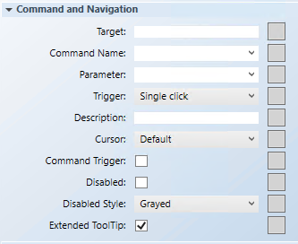
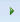

Configure the Rotator Command and Navigation Properties
The following instructions are just one example of how a rotator command can be drawn and configured for commanding from within a graphic.
Scenario: You want to configure the Command and Navigation properties of a Rotator command control that allows you to command the Present Value of an Analog Ouput data point from within a graphic.

NOTE:
If you create a command control element in a symbol instead of on a graphic, follow the steps below, replacing the target and any other hard-coded references with * substitutions in the Evaluation Editor. For more information, see Symbol Property Substitution.
- You have reviewed the Command and Navigation Properties section and have a full understanding of the fields and the options available to you.
- You have drawn and configured a Rotator command control on the graphic and configured the command control properties.
- In the Properties view (Rotator properties), expand the Command and Navigation properties group.

- In the Target field, drag a designated data point from System Browser. If the target designation does not contain a property, the default property is targeted. Otherwise you must specify the property by typing a period (.) and then the property name after you drag the data point into the Target field, for example:
CCProject.LogicalView:Logical.PXRack.B.Block.Hcrv;.Property_Name. - For this example, drag the Analog Output data point into the Target field. You do not need to type a property at the end of the data point path since Present Value is the default property used.
NOTE: If you have the data point selected in System Browser, or you have selected a symbol instance of the data point on the canvas, the data point information is displayed in the Operations and Extended Operations tab, from there, drag the property you want to target into the Target field. The property name is added automatically. - From the Command Name drop-down menu, select or type the command rule that you want to apply to the property.
- For this example, type or select Write.
NOTE: The Command Name must match the Name of the command in the Models and Functions Command Configuration section. This field is case-sensitive. - In the Parameter field, do one of the following:
- Select the value from the drop-down menu.
NOTE: For a stand-alone command control, if you have multiple parameters, only one parameter receives the value from the control itself and all other parameter values must be hard-coded. - For this example, delete everything but the parameter name, which in this case is: Value.
NOTE: This field must have the same parameter names listed in the Parameter Name field of the Command Control property. - For rotator controls, commands are sent by moving the Rotator thumb. The Trigger drop-down menu is irrelevant for this control.
- (Optional) In the Description field, type a brief description of the command that will display in the tooltip.
- In the Element Tree view, select the Thumb element of the Rotator, and in the Property View navigate to the Command and Navigation property. From the Cursor drop-down menu, select the cursor preference that you want to display when the command is active. The cursor must be set in the thumb’s element properties, if you want the specified Cursor to appear when it moves over the thumb.
- In the Element Tree view, click the Rotator element and then in the Property View, navigate back to Command and Navigation property and select the Command Trigger check box to enable the command control to send a command.
- (Optional) To disable the command, select the Disabled check box, and from the Disabled Style drop-down menu, select a style.
- For example, if the selected data point is
Out_of_Serviceand the command is disabled, the selected disabled style will be active at runtime to reflect this. - The Extended Tooltip check box is selected by default. It displays the following command object details: Target, Command Name, and Parameter. If enabled, the extended tooltip is added to any existing tooltips configured for the element.
- Click Save As
 .
. - To test the rotator command control in Runtime mode, from the Home tab, in the Modes group, select Runtime mode

. - Do one of the following:
- Create tick marks, proceed to the next topic.
- If you created a symbol and you want to designate it as the default command symbol for an object type proceed to Designating and Adding a Default Command Symbol to a Graphic.